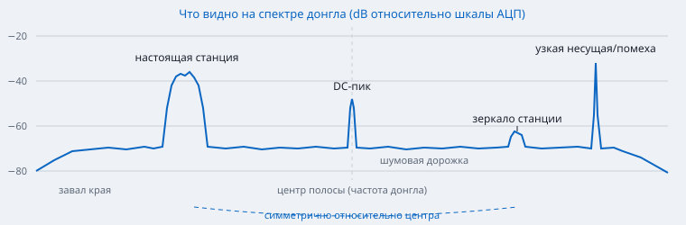

Содержание › Основы радиоприёма
Спектр и водопад
Спектр и водопад — «глаза» SDR. По ним вы находите станции, оцениваете их силу, распознаёте вид модуляции и отличаете настоящие сигналы от помех.
Как читать#
- Спектр (верх): по горизонтали — частота, по вертикали — уровень в dB. Нижний «ковёр» — шумовая дорожка, всё, что торчит над ней, — сигналы.
- Водопад (низ): та же частота по горизонтали, а время течёт сверху вниз; яркость — уровень. Водопад показывает то, что спектр «забывает»: короткие вспышки раций, ритм DMR, сползание спутника.
- Подсвеченная полоса — то, что сейчас слышно (полоса демодулятора); щелчок по спектру или водопаду перестраивает туда VFO, колесо мыши — шаг частоты.
- Тонкая линия над спектром — пиковое удержание (галочка «Пики»): помнит максимум, удобно ловить редкие сигналы.

Разрешение БПФ#
Спектр строится быстрым преобразованием Фурье (БПФ, FFT): полоса делится на N «корзинок» (бинов). Ширина бина = частота дискретизации / N.
| «Разрешение» (точек) | Бин при полосе 2,4 МГц (например, RTL-SDR) | Когда |
|---|---|---|
| 1024 | 2,34 кГц | обзор, слабый ПК |
| 4096 | 586 Гц | по умолчанию: рации, FM, авиа |
| 16384 | 146 Гц | CW, SSB, узкие несущие, поиск слабых сигналов |
Чем уже бин, тем ниже шумовая дорожка на экране (в каждом бине меньше шума): ×4 точек — дорожка на 6 dB ниже, и узкая несущая выделяется сильнее. Широкий сигнал (FM) при этом не становится «выше» — он просто распределяется на больше бинов. Поэтому уровень шума на экране зависит от настроек, а ОСШ сравнивают в одной и той же полосе.
Усреднение, обновление, шкала#
- «Усреднение» сглаживает шум: линия спокойнее, слабые постоянные сигналы виднее, но короткие вспышки сглаживаются. Для поиска слабого «Метеора» — побольше, для раций — поменьше.
- «Обновление» — сколько раз в секунду перерисовывается картинка (5–30 /с). Меньше — меньше нагрузка на ПК.
- «Шкала авто» подбирает пределы dB сама. Снимите галочку и задайте границы вручную, чтобы настроить контраст водопада: нижнюю границу — чуть ниже шумовой дорожки, верхнюю — чуть выше самых интересных сигналов.
- Эти настройки — в карточке «Спектр и водопад» окна режима.
DC-пик в центре#
Ровно в центре полосы (на частоте, куда настроен приёмник) часто виден узкий пик — постоянная составляющая (DC) от смещений в АЦП и тракте I/Q. Это не сигнал. SDR4NOOB по возможности ставит центр полосы в стороне от слушаемой частоты (кнопка «Центрировать спектр на VFO» сдвигает центр чуть ниже VFO), чтобы пик не попадал в демодулятор. Сканер DMR сдвигает окна на полшага сетки по той же причине.
Зеркальные пики#
Если каналы I и Q приёмника чуть-чуть не равны по усилению или фазе, мощный сигнал на расстоянии +Δ от центра даёт слабую копию на −Δ, симметрично относительно центра. Обычно копия на 30–50 dB слабее оригинала, заметна только у очень сильных станций. Отличие от настоящего сигнала — см. ниже.
Как отличить сигнал от помехи#
| Проверка | Настоящий сигнал | Ложный |
|---|---|---|
| Сдвиньте центр полосы (перестройтесь на 200–500 кГц и вернитесь VFO) | остаётся на своей частоте | зеркала и DC-пик «едут» вместе с центром |
| Уменьшите усиление на 10 dB | ослабевает на ~10 dB | интермодуляция ослабевает на ~30 dB, перегрузочные полосы исчезают |
| Снимите антенну | пропадает | помеха от ПК/USB остаётся (наводится на сам приёмник) |
| Выключите подозрительный прибор (лампа, зарядка) | не меняется | «гребёнка» исчезает |
| Вид на водопаде | модуляция «живая»: речь, пакеты, ритм | ровные линии через одинаковый шаг, постоянная «гребёнка» — бытовая электроника |
Типичные «картинки» на водопаде#
| Что видно | Что это |
|---|---|
| Широкие (200 кГц) непрерывные полосы | FM-вещание |
| Короткие вспышки шириной 10–15 кГц | NFM-рации, реплики |
| Вспышки с яркой центральной линией | AM-авиа |
| Ровная «зебра» шириной ~10 кГц, работает секундами и минутами | DMR (ретранслятор, управляющий канал) |
| Наклонный «столбик» ~120 кГц, плавно сползает на несколько кГц | «Метеор-М» (доплер) |
| Наклонная тонкая линия или полоска 15 кГц | любительский спутник или МКС |
| Пунктир тонкой линии | телеграф (CW) |
| Широкий плоский «стол» 7,6–7,8 МГц (видно перестройками) | DVB-T2 |
| Ровные пики через 25 кГц, 100 кГц или 1 МГц по всему диапазону | гармоники тактовых генераторов электроники |
См. также: Перегрузка, Виды модуляции.